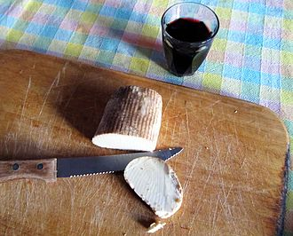
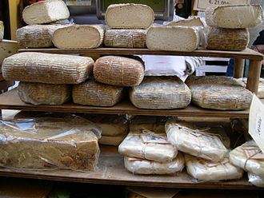
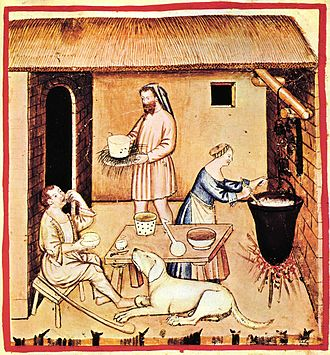
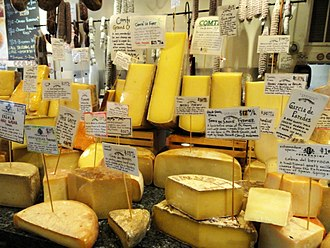

History of Cheese
Origins

Cheese is an ancient food whose origins predate recorded history. There is no conclusive evidence indicating where cheesemaking originated, whether in Europe, Central Asia or the Middle East, but the practice had spread within Europe prior to Roman times and, according to Pliny the Elder, had become a sophisticated enterprise by the time the Roman Empire came into being.
Earliest proposed dates for the origin of cheesemaking range from around 8000 BCE, when sheep were first domesticated. Since animal skins and inflated internal organs have, since ancient times, provided storage vessels for a range of foodstuffs, it is probable that the process of cheese making was discovered accidentally by storing milk in a container made from the stomach of an animal, resulting in the milk being turned to curd and whey by the rennet from the stomach. There is a legend—with variations—about the discovery of cheese by an Arab trader who used this method of storing milk.
The earliest evidence of cheesemaking in the archaeological record dates back to 5500 BCE and is found in what is now Kuyavia, Poland, where strainers coated with milk-fat molecules have been found.
Cheesemaking may have begun independently of this by the pressing and salting of curdled milk to preserve it. Observation that the effect of making cheese in an animal stomach gave more solid and better-textured curds may have led to the deliberate addition of rennet. Early archeological evidence of Egyptian cheese has been found in Egyptian tomb murals, dating to about 2000 BCE.
The earliest cheeses were likely quite sour and salty, similar in texture to rustic cottage cheese or feta, a crumbly, flavorful Greek cheese. Cheese produced in Europe, where climates are cooler than the Middle East, required less salt for preservation. With less salt and acidity, the cheese became a suitable environment for useful microbes and molds, giving aged cheeses their respective flavors. The earliest ever discovered preserved cheese was found in the Taklamakan Desert in Xinjiang, China, and it dates back as early as 1615 BCE.
A 2018 paper published in Analytical Chemistry stated that the world's oldest cheese, dating to approximately 3200 years before present, was found in ancient Egyptian tombs.
Ancient Greece and Rome

Ancient Greek mythology credited Aristaeus with the discovery of cheese. Homer's Odyssey (8th century BCE) describes the Cyclops making and storing sheep's and goats' milk cheese (translation by Samuel Butler):
We soon reached his cave, but he was out shepherding, so we went inside and took stock of all that we could see. His cheese-racks were loaded with cheeses, and he had more lambs and kids than his pens could hold...
When he had so done he sat down and milked his ewes and goats, all in due course, and then let each of them have her own young. He curdled half the milk and set it aside in wicker strainers.
By Roman times, cheese was an everyday food and cheesemaking a mature art. Columella's De Re Rustica (c. 65 CE) details a cheesemaking process involving rennet coagulation, pressing of the curd, salting, and aging. Pliny's Natural History (77 CE) devotes a chapter (XI, 97) to describing the diversity of cheeses enjoyed by Romans of the early Empire. He stated that the best cheeses came from the villages near Nîmes, but did not keep long and had to be eaten fresh. Cheeses of the Alps and Apennines were as remarkable for their variety then as now. A Ligurian cheese was noted for being made mostly from sheep's milk, and some cheeses produced nearby were stated to weigh as much as a thousand pounds each. Goats' milk cheese was a recent taste in Rome, improved over the "medicinal taste" of Gaul's similar cheeses by smoking. Of cheeses from overseas, Pliny preferred those of Bithynia in Asia Minor.
Post-Roman Europe

The British Cheese Board claims that Britain has approximately 700 distinct local cheeses; France and Italy have perhaps 400 each. (A French proverb holds there is a different French cheese for every day of the year, and Charles de Gaulle once asked "how can you govern a country in which there are 246 kinds of cheese?")[16] Still, the advancement of the cheese art in Europe was slow during the centuries after Rome's fall. Many cheeses today were first recorded in the late Middle Ages or after—cheeses like Cheddar around 1500, Parmesan in 1597, Gouda in 1697, and Camembert in 1791.
In 1546 The Proverbs of John Heywood claimed "the moon is made of a greene cheese." (Greene may refer here not to the color, as many now think, but to being new or unaged.) Variations on this sentiment were long repeated and NASA exploited this myth for an April Fools' Day spoof announcement in 2006
Modern era

Until its modern spread along with European culture, cheese was nearly unheard of in east Asian cultures, in the pre-Columbian Americas, and only had limited use in sub-Mediterranean Africa, mainly being widespread and popular only in Europe, the Middle East, the Indian subcontinent, and areas influenced by those cultures. But with the spread, first of European imperialism, and later of Euro-American culture and food, cheese has gradually become known and increasingly popular worldwide.
The 1860s saw the beginnings of mass-produced rennet, and by the turn of the century scientists were producing pure microbial cultures. Before then, bacteria in cheesemaking had come from the environment or from recycling an earlier batch's whey; the pure cultures meant a more standardized cheese could be produced.
Factory-made cheese overtook traditional cheesemaking in the World War II era, and factories have been the source of most cheese in America and Europe ever since.